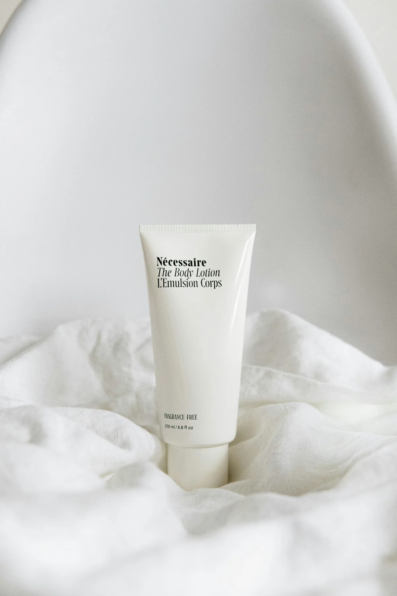

What is Chemical peels?
Superficial, medium and deeper peels differ in ingredients, penetration, downtime and who should deliver them. They may be discussed for selected acne, pigment or texture concerns after diagnosis.
What should you consider before treatment?
Skin tone, recent sun exposure, active conditions, cold sores and medicines can affect risk. Ask for the exact acid, concentration, depth, neutralisation plan and whether a patch test or skin preparation is needed.
Risks and recovery
Stinging, redness and peeling are expected to varying degrees. Burns, infection, scarring, prolonged redness and lighter or darker pigmentation can occur, particularly after stronger treatment or poor sun protection.
Questions to ask at a consultation
- What peel and depth are proposed?
- Why is it suitable for my skin tone?
- What preparation and downtime are required?
- Who manages a burn or pigment change?
How much does Chemical peels cost in Manchester?
Around £80–£300 per session
Indicative price for superficial to medium private treatment. Peel strength, area, preparation and course length affect cost. This is a guide, not a quote.
Get a chemical peel priceAreas served for Chemical peels enquiries
Manchester Vita receives enquiries from adults across Manchester, Greater Manchester and nearby Cheshire, including:
- Manchester city centre
- Didsbury
- Chorlton
- Sale
- Altrincham
- Stockport
- Salford
- Trafford
- Wilmslow
- Bury
- Bolton
- Oldham
Provider coverage and appointment locations vary. Areas listed here are not Manchester Vita clinic locations.